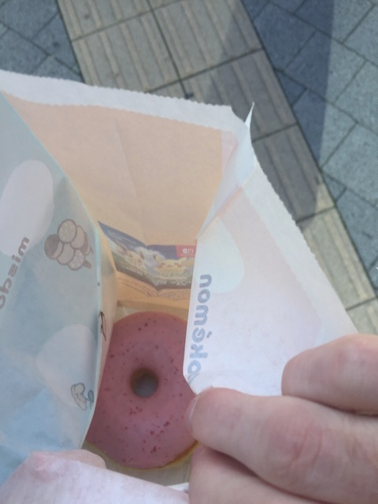
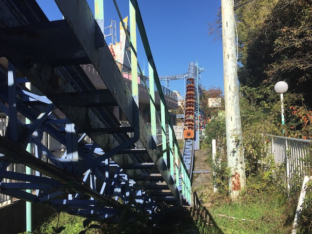
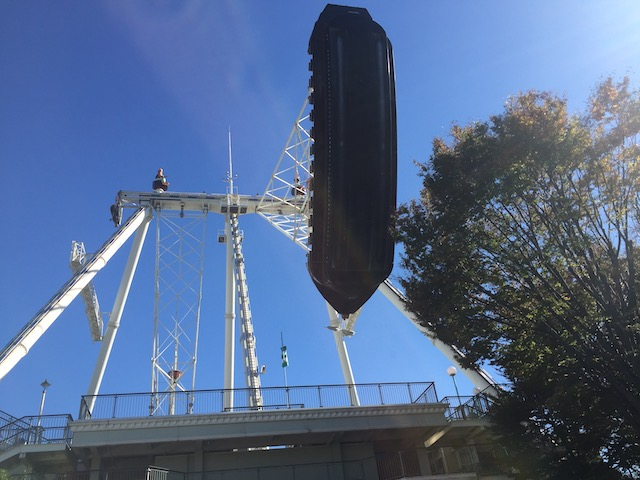
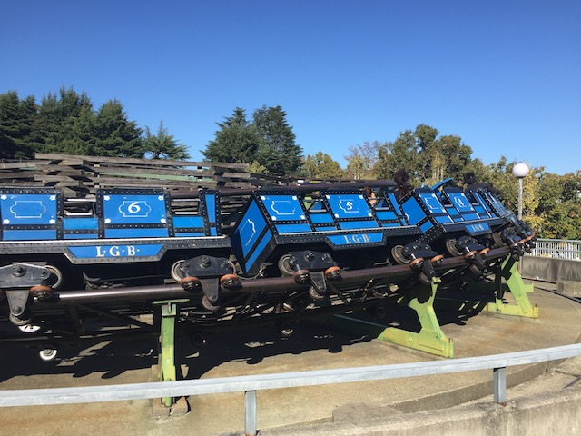
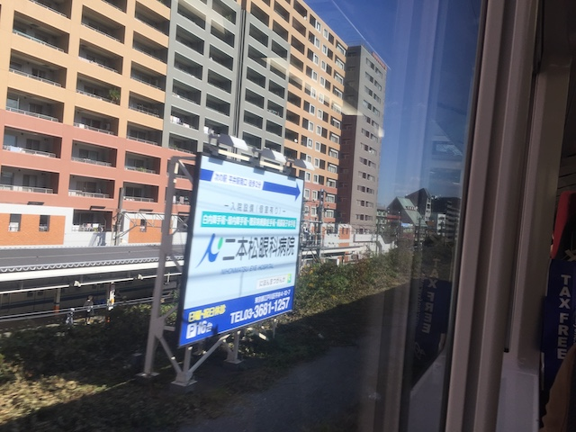

| |
JAPAN 2018!!! =)
Osaka Universal Studios Japan Parque Espana Nagashima Spaland
Hiroshima & Kyoto Tobu Zoo Fuji-Q Highlands
Tokyo Joypolis Tokyo Dome City Yomiuriland Sea Paradise Hamanako Pal Pal Tokyo Disney Resort Yokohama Cosmoworld
Toshimaen
OK. It's my last day in Japan. What can I do that's Japan only? Well, Mister Donut is still here. It used to be really popular in the US, but now, there's only 1 left, with all the others either closing or being turned into Dunkin Donuts. However, they moved their headquarters to Japan, and are thriving over here. So hey. Let's check it out.
Hey there. Detective Pikachu here. Today, we're here to crack the mystery of what donut is in the bag. =)

Just a standard pink donut? Aww, they don't have the fun donuts here like they do at Voodoo Donuts.
 OK. How the hell is this train so empty and I'm the only one here? That just feels really weird. Normally, these subway cars in Japan are packed.
OK. How the hell is this train so empty and I'm the only one here? That just feels really weird. Normally, these subway cars in Japan are packed.
 Hmm. I wonder where we're heading today?
Hmm. I wonder where we're heading today?
 Yep. We're back at Toshimaen. I wasn't sure if I was gonna visit this park. I tried earlier, but it was closed. In the end, I shrugged, thought to myself "I have extra yen. Why the f*ck not?". So, here I am at Toshimaen.
Yep. We're back at Toshimaen. I wasn't sure if I was gonna visit this park. I tried earlier, but it was closed. In the end, I shrugged, thought to myself "I have extra yen. Why the f*ck not?". So, here I am at Toshimaen.
Sorry about the dull setting that's just asphalt. Hopefully we can distract you from that with some plastic flowers.
Just in case you get lost.
So Toshimaen likes Tom & Jerry. A lot. They pretty much became the mascots of the park in the same was Snoopy is the mascot for all the Cedar Fair parks.
 All right. Let's start out with the only ride here that's unique in the slightest bit. Cyclone.
All right. Let's start out with the only ride here that's unique in the slightest bit. Cyclone.

Now I didn't have any expecations for this ride. Just a standard forceless family coaster. Whatever. But to my surprise, I really liked this ride!
 OK. It's not amazing or anything. But those drops surprisingly have some genuinely good airtime. It was MUCH better than I was anticipating. =)
OK. It's not amazing or anything. But those drops surprisingly have some genuinely good airtime. It was MUCH better than I was anticipating. =)
 Oh yeah. There's also an Arrow Corkscrew here as well.
Oh yeah. There's also an Arrow Corkscrew here as well.
If you don't like this ride, be sure to blame the Americans! They're the ones responsible for the Arrow Corkscrews!
This wasn't nearly as good as Cyclone, but hey. At least it was smooth.
Meh, they're nothing special. But they're fun enough. I guess.
If the Arrow Corkscrew is too much for you, well....here's a playground for you.
 Aww. Last credit in Japan. =(
Aww. Last credit in Japan. =(
 Cha-Ching.
Cha-Ching.
So Toshimaen has a lot of its rides up on the roof. I guess this is for space reasons as....yeah. It's not a very big park. Hey, I like it. Yo, check it out. I got a bigass pirate ship on my roof!

I'm not sure why, but this giant pirate ship was much better than the one at Nagashima Spaland.
So all over Japan, they have these stuffy riders (Apparently, they're also popular in Canada). They look cool and all. Wish I bothered to check one out. Oh well. Please come to the US.
 Yes, I would like a Cyclone reride, thank you very much.
Yes, I would like a Cyclone reride, thank you very much.
Today's vending machine drink is Fanta Grape. Yeah, it's avaliable back home, but it's not nearly as popular there as it is here. And....Fanta Grape is good.
So to me, Toshimaen felt like the Elitch Gardens of Japan. It's a nice park and all, and is good for locals. However, the ride selection isn't that good. Yeah, I did really like Cyclone, but it's not enough to make this park. This park really needs that Shuttle Loop that closed a decade ago or some other new ride.
Another random roof flat ride. Might as well check it out.
For the ultra sad and pathetic, they have a pseudo-credit for you.

OK. So somehow, I lost my ride pass. I have no idea how, but....I figured "Do I really wanna go through the pain in the ass process of getting it replaced for a pseudo-credit, a couple more random flat rides, and another reride on Cyclone? Nah, I'm good". At least the park is nice enough to offer replacements for dumbass foreign tourists.
I'm not sure why, but for some reason, the horrible translation here is just hilarious. Oh, and BTW, You're Welcome Toshimaen. I had fun here.
So long Toshimaen. I almost certainly will not be back on my next Japan visit, but it was still fun to visit for a couple hours.
HOLY SH*T!!! IT'S STILL ALIVE OVER HERE!!!
Hey 90s Kids (and earlier)! You can stop crying and just head over to my Japanese stores and buy your crappy toys here (or you can just keep using Amazon).
So I normally wouldn't go inside. We had a Toys 'R' Us in Ventura forever before they went out of business, don't think I ever went inside once my age hit double digits. But since they're all gone and people are nostalgic, might as well look inside and see if there's any special Japanese things in here.
"All you Americans may have given up on me, but f*ck you anyways! I've got Japan and Santa on my side!"
OK. I'm done with Toshimaen. What more is there for me to do on my last day in Japan?
It should be obvious at this point.
 Yep. We're back at Hanayashiki. I've given this park exactly 1 week since I last attempted to get this credit. So hopefully, that's enough time to get all the mechnical problems fixed.
Yep. We're back at Hanayashiki. I've given this park exactly 1 week since I last attempted to get this credit. So hopefully, that's enough time to get all the mechnical problems fixed.
Well, the Space Shot is running. So....that's some good news. Last week, almost everything was closed. So this week, stuff did start to reopen.
 NO!!! THE ROLLER COASTER IS CLOSED!!! F*CK!!! AND THIS IS MY LAST DAY!!! I HAVE NO MORE CHANCES!!! =(
NO!!! THE ROLLER COASTER IS CLOSED!!! F*CK!!! AND THIS IS MY LAST DAY!!! I HAVE NO MORE CHANCES!!! =(
It's a shame that I had to miss Hanayashiki, but hey. Hopefully I'll get this damn credit on my next Japan trip.
You know, I've been seeing this golden peice of sh*t for the past 2 weeks when walking around Tokyo. Time to fully check it out.
 While this is no beer tour and has nothing to do with Asahi as a beer company, there is a bar up there. But....eh. Not what I was hoping for,
While this is no beer tour and has nothing to do with Asahi as a beer company, there is a bar up there. But....eh. Not what I was hoping for,
Hmm. Local park. Might as well check it out. I assume that this is a place that locals would hang out.
Hmm. This seems suspicously nice for just a public park.
So yeah. This isn't just your typical local park. It's also home to a memorial for those who died when we firebombed the crap out of Tokyo during WWII.
"I have no idea who this is, but hey! He's got a statue! So he must be important!"
Why eat us? There's a whole ocean full of fish just over there. Eat those bastards!
Love the way that the Tokyo Train Station is decorated.
Hey coaster nerds! Intersted in buying?
So when I checked into my flight leaving for Tokyo, I was told that I HAD to buy the Tokyo Banana Cookies. They're part cookie, part sponge-cake. Kind of like a mix between a cookie and a banana creme filled Twinkie. And...I gotta be honest. I wasn't a huge fan. Hell, I still have some in my pantry. Just eating another one, and....not bad. But (I know people really love these, so this is a very controversial opinion) overrated. Sorry, won't get them again next time I visit Japan.
I don't really have a goal or an objective. Just wander around Tokyo and absorb all that I can while I'm still here.
I miss this place so much.
OK. Where should I go for my last dinner in Japan (of this trip)? I have to do something special or really good. Hey. You know that resteraunt I kept walking past for 2 weeks? The one with the Mega Melon Float? Yeah. I think I'm gonna actually eat the food here.
Did I get the Mega Melon Float? No. There's no way I could've finished that thing. But I still had to order a Melon Float because I love Melon Soda, and a Melon Float....Mmm! So good! Also, I ordered some Sour Apple Alcoholic Drink that was really good.
As for the actual food, it was pretty good. Not a place that I'm gonna write home about and put on my "MUST RETURN TO ON NEXT JAPAN VISIT" list. But I'm happy I ate here.
Goodbye local playground I walked past for 2 weeks while heading to the JR Akihabara station and back to my hotel (Apparently, this place is named Sakuma Park. Thank you Google Maps).
Last Pocari Sweat of the trip (and the last Pocari Sweat I've had at time of posting this update). =(
And, it's heading home day. Might as well stop at a vending machine and get my final vending machine drink (Match) to sip as I say goodbye.
I've got my ticket to get on the Narita Express.
Hey, at least getting to the airport is easy.

Can't wait to come back on my next Japan visit.
 OK. I still have some yen leftover. So while I'm here, I decided to try some wacky local Not in America Kit Kat flavors.
OK. I still have some yen leftover. So while I'm here, I decided to try some wacky local Not in America Kit Kat flavors.
Kit Kat strawberry was good. Pretty much what you expect. Kit Kat Melon with Cheese sounds weird. I don't want cheese in my Kit Kat. But surprisingly, it's really good. I know melon flavor is huge here, and....its just really good. Kit Kat Peach is also really good. Hey Georgia! If you're such a big peach state! Then why the hell don't you serve these!? But the best one of all is Kyoto Grape. I'm not sure if Kyoto Grape is something different from just regular grape, but....this flavor was amazing. I should've tried more flavors. But...oh well.
I don't wanna get on the plane to home! ='(
Goodbye Japan. You are an amazing country, I absolutely loved this trip, and I already wanna go back because this country is just so good!
And, I'm now back in China. Hello Pudong Airport Pandas (It feels really weird to list China among all the countries I've visited. But hey. I left the airport, stayed overnight, and had a local experience with the chicken head. It certainly counts more than Switzerland, which I also count in my countries I've visited).
 So I normally don't buy stuff from airports as....yeah. Overpriced. But, I have WAY more Chinese Yuan than needed (Leftover from my night in Shanghai at the begenning of this trip), and I'm stuck here for 4 hours. So I might as well get a Starbucks drink. And they seem to have some Christmas Chinese flavors. As...yeah. Christmas Dessert is not a flavor we have back home. Not bad, but...I prefer the home flavors.
So I normally don't buy stuff from airports as....yeah. Overpriced. But, I have WAY more Chinese Yuan than needed (Leftover from my night in Shanghai at the begenning of this trip), and I'm stuck here for 4 hours. So I might as well get a Starbucks drink. And they seem to have some Christmas Chinese flavors. As...yeah. Christmas Dessert is not a flavor we have back home. Not bad, but...I prefer the home flavors.
OK. Time for that Incrediblecoasters Rant in China I promised earlier. Now, the Shanghai Pudong Airport is...interesting. I certainly wouldn't call it ideal, but honestly, it's not the worst airport out there (That honor still goes to Charles de Gaulle in Paris. God, I HATE that airport). But I will say this. F*CK THE WIFI AT PUDONG AIRPORT!!!! You see, that sign says Free Wi-Fi, but yeah. That's a lie. Well....sort of. It claims free Wi-Fi, but every time I try connecting to it, it keeps sputtering out and refusing to connect, all while in the meanwhile, an advertisement for "Faster Pudong Airport Wi-Fi, just $5". NO ASSHOLES!!! I'M NOT PAYING FOR THE INTERNET WHEN THERE'S FREE WIFI!!! Well, the problem is that my layover here is 4 hours. Too short to leave the airport and see Shanghai like last time, but long enough to drive me crazy and needing some sort of entertainment. And that's what the internet is for. Well, after spending 40 minutes just trying, failing, and getting that stupid ad, I eventually crack, and say "F*CK IT!!!" and pay the $5 for the "Fast" Wi-Fi. And right after I do that, I get a message from the free Wi-Fi, saying "Thank you for using Pudong Airport's Free Wi-Fi". ARE YOU F*CKING KIDDING ME!!!!? GAH!!!! F*CK YOU PUDONG AIRPORT!!!! F*CK YOU!!!? IS THIS SOME RESULT OF THE INTERNET BEING CENSORED AND CONTROLLED IN CHINA!!!? (BTW, that makes internet browsing a pain in the ass). GRR!!!! >=(
And now that I'm boarding the plane from Shanghai to LA, the trip is offically over. And...man. This trip was amazing. Japan is an amazing country that totally met my expectations, if not exceeded them. All the parks were a ton of fun, Tokyo Disney is unbeleivable, staying in hostels was fun, I got to try a lot of cool wacky Japanese foods, and I even got to see a lot of culture (Hello friends that criticize me for going overseas and then spending too much time on roller coasters), exploring Osaka, Hiroshima, Kyoto, and Tokyo in full detail. I know I spent 4 years fundrasing for this trip, and it was SO WORTH it! Probably not gonna do a major trip like this anytime soon. I know next year, I'm just doing a small easy domestic trip hitting the one part of the US I haven't done *cough* Virginia *cough*(actually, these updates are so late that I ALREADY f*cking took next years trip! Joy! Now that the Japan updates are done, I get to start working on those now!). And yeah, my next few years are gonna be spent doing domestic trips. Probably gonna be a couple years before my next international trip, which is likely going to be (excluding Mexico & Canada) the U.K. Hope you enjoyed these Japan updates, and....yeah. I know I have a long list of International Priorities since I'm essentially done with the US, but....a Japan Return Visit is definetly up there.
Home
|